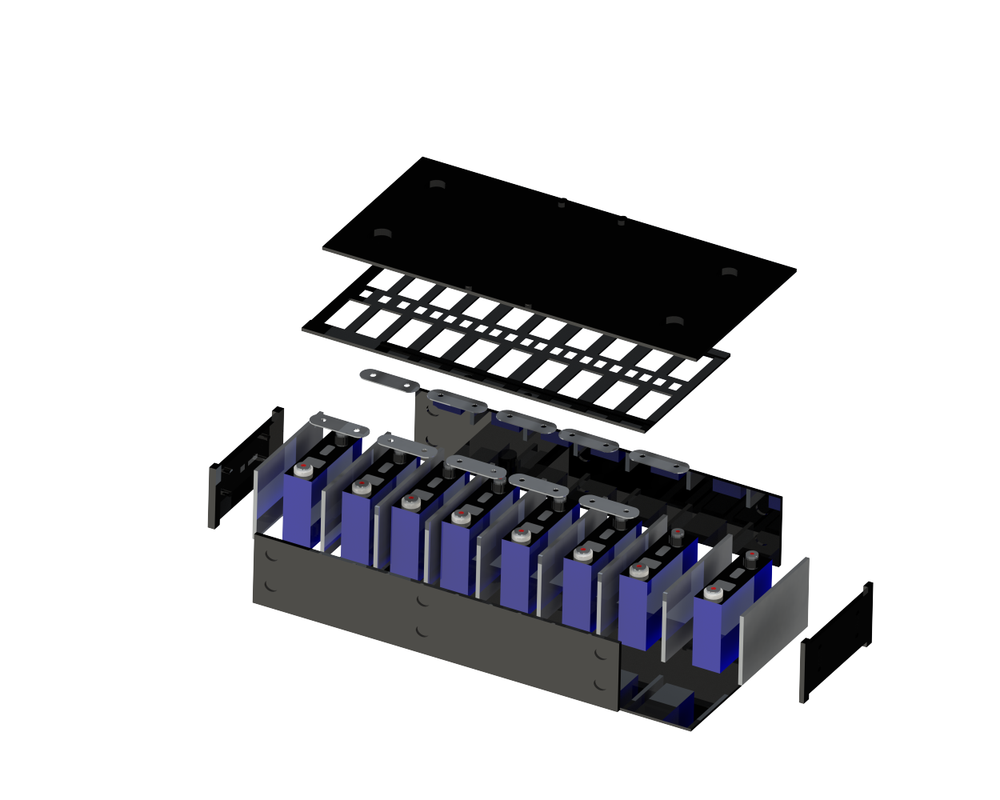

In this article, we'll try to understand the fascinating world of new energy battery pack design, shedding light on structural design schemes and strategies.
We'll take a journey from understanding the overall safety features of the battery pack to exploring ways to enhance its safety, all while making it easily understandable for the everyday reader.
The Safety Core of New Energy Models
As the world embraces pure electric vehicles, the quality and safety of power batteries have taken center stage. One of the most critical factors affecting battery safety is thermal runaway, which accounts for more than 50% of safety issues in power batteries. This phenomenon can be triggered by various factors such as aging of battery components, external collisions, hot weather, and high loads. It's clear that ensuring the safety of power batteries is crucial as we witness the surge in ownership and usage of electric vehicles.
Design Considerations for the Battery Pack
When it comes to designing the battery pack, several factors come into play. The limited space within the vehicle chassis poses a challenge, as the battery pack must not only fit within this space but also meet the electric range requirements of the vehicle. This involves careful consideration of the type of battery cells to be used, their capacity, and the working voltage of other electrical components in the vehicle. Additionally, monitoring the battery cells and their connections is essential for ensuring optimal performance and safety.
Enhancing Thermal Stability and Safety
The selection of raw materials plays a crucial role in enhancing the thermal stability of the battery cells and preventing thermal runaway. From optimizing anode materials to improving the electrolyte formula, every aspect is meticulously designed to mitigate the risk of thermal events. Furthermore, the structural design of lithium battery packs, including load-bearing frames and high-voltage connection components, is essential for ensuring the overall safety and functionality of the battery pack within the vehicle.

Prioritizing Active and Passive Safety Features
Active safety measures, such as thermal runaway detection, voltage monitoring, and temperature detection, are implemented to preemptively address potential safety issues. These measures are complemented by passive safety designs, which include insulation resistance, structural safety tests, and thermal runaway protection schemes. The goal is to not only detect potential hazards but also to prevent their occurrence and minimize their impact.
Looking Ahead
As we conclude our exploration of battery pack design strategies, it's evident that safety and innovation go hand in hand. The continuous research and development in this field will pave the way for even safer and more efficient energy storage solutions. In the next phase of research, we will focus on the structural design process, simulation research, and further advancements in passive safety design concepts.
Conclusion
In essence, the journey to enhancing battery pack safety is an ongoing one, driven by a commitment to innovation and a relentless pursuit of excellence. As we embrace the future of energy storage, it's imperative that safety remains at the forefront of our endeavors.